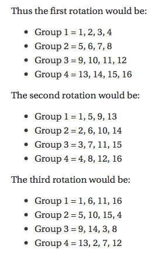

The Power of a Method
As a new programmer in general, as well as being new to Ruby, there seems to be from the newcomer's perspective an endless number of methods out there for every purpose one can think of. Often I'll find myself writing code to accomplish some task I'm after only to realize after the fact that there was a method already developed to do exactly that with a single line of code.
One of our challenges in Phase 0 was to write a program that would assign each member into groups of 4, three different times without placing two students in the same group twice. Although I knew it was easy to randomize numbers in any programming language, and I could separate out groups in sections of 4, finding a method to make sure no student would end up with another student more then once proved to be a task far beyond aynthing I'd done before.
The Hard Way
Of course the first set of groups there was no way to fail. Simply section everyone off in fours in any order and that was good enough. The second set is where the challenge began, but with a little thought I was able to develop a method using what I knew to create something that by all appearances would never place the same two students together into the same group, no matter how many times it was run.
The third and final set however is where I got stuck. I ended up doing some reseach and came across this method by a teacher who split his classes into similar groups using a pen and paper:

The Easy Way
This confirmed the patterns I had used for the first two sets of groups and appeared to solve my problem for the third. Only implementing this solution proved to be far more challenging then I imagined.
Besides the larger pool of students that I was working with, which required mathematical adjustments to this teacher's solution which were difficult to translate, his work was primarily relying on shifting rows and columns in ways that were easy on paper, but far beyond my knowledge of how to program. It may not be readily apparent by looking, but the difference between the first two sets above is accomplished by taking each horizontal row and flipping it into a vertical column. A similar approach is taken to the third set, but with an additional shift in the columns. I had prior to this figured out how to code the first two without needing to turn rows into columns or shift them around, but the third was proving too difficult.
At last I came across another pattern I could identify, and therefore code, in the third variant. It took me leaving and coming back to it over the better part of a day, but at long last it worked. I had a program that would randomize students into groups of 4 without ever placing any two students together twice.
And then I discovered the Ruby method rotate. On the surface it's simple enough. It takes an array and shifts the whole line to any amount you specify. In one line of code I could accomplish what I'd spent the better part of a day coding around to achieve the same result. Technically both programs yield the same answer, my approach was not wrong in the sense that it failed, but had I known of this simple method, I could have turned a day's work into a minute's. And that's how I learned the power of Ruby methods.
Happy Coding!